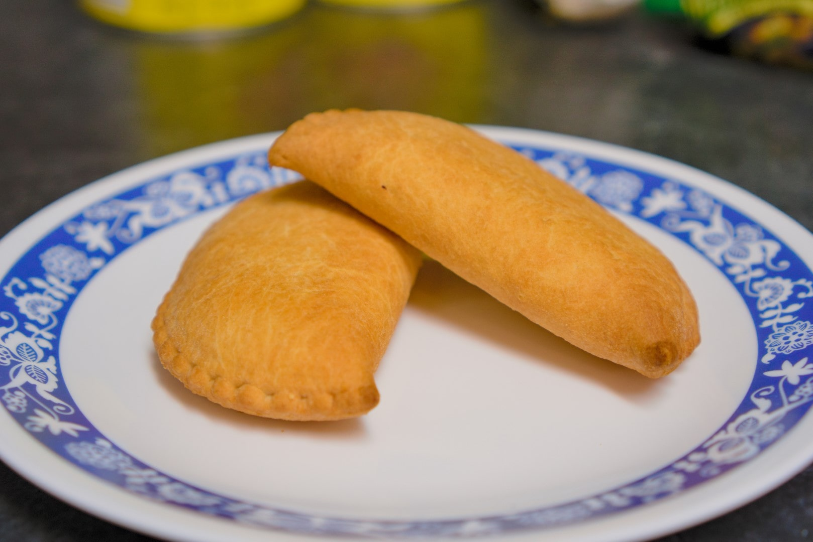

Air Fryer Pizza Pops
Published —
Edited
Place a single layer of pizza pops into your air fryer and set it to 200°C (392°F) for 10 minutes. Let cool before eating.
These steps were performed with a 1200-watt air fryer.
